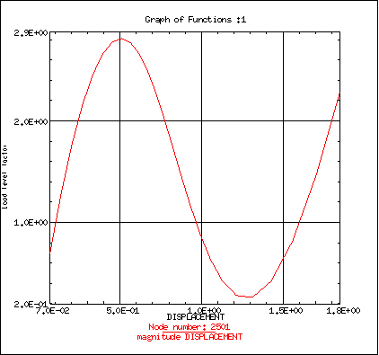
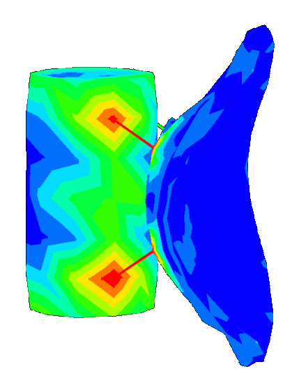
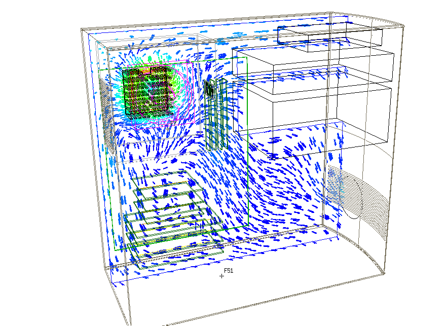

Results Generated on the Pluto
Express Satellite Model
Nonlinear Statics Analysis
- Simulation of both geometric and
material nonlinearities.
| This includes plasticity, creep, contact, and
post buckling behavior. The tanks were going to be subjected to a
load on one end. We wanted to verify that the tank would support
the load without failing. The resulting failure led us to redesign
the tank.
 |

|
Thermal Analysis - Simulation
of conduction, convection, and radiation, for both linear and transient
analysis.
 |
|
The satellite was going to face extreme thermal conditions as
it orbited. We ran thermal test to determine the temperatures the
craft would be subjected to from internal systems (guidance and navigation
systems) and from the environment of space (space and the sun). Transient
thermal analysis evaluated the situation, accounting for all conduction,
convection, and radiation.
|
Linear Statics Analysis -
Analysis for Stress,
Strain, Displacements, Etc., for Static Loading Conditions
| The temperatures from the thermal analysis were then mapped to a structural
mesh, and we performed a linear statics solution on the bus and the reflector
in order to insure that the stresses and deflections due to thermal (and
physical) loads did not cause any problems. Loads can include forces,
pressures, and temperatures. |
 |
|
|
|
|
Electronic Systems Cooling - Analysis
of Fluid Flow and Thermal Effects in a coupled solution
|  |
This is the first of several satellites that will be built and launched,
so we developed some ground test equipment to be used to verify system
performance. The testing equipment was custom built, and we needed
to insure a quality setup, so we assembled the test cabinet in solids and
performed Electronic System Cooling to verify that the temperatures in
the cabinet were reasonable. |
|
|
|
|
|
|
Durability - Analysis
of part failure due to repeated loads
|